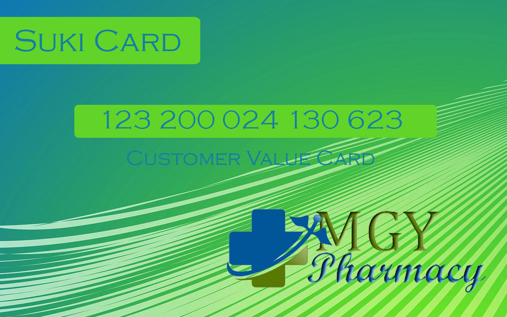

Free Check Up
Why Go For a CheckupWhile this minor medical procedure may seem inconsequential, recognize the importance of being able to detect a possible ailment before it even starts. Check-ups are pre-emptive measures taken by those who want to ensure that their bodily functions are performing normally - which, of course, is a great indicator of one's health. Through the years, Mercury Drug has opened store after store all over the Philippines to bring medicines within easy reach of its customers. Today, it has grown into a vast network of more than 1,000 stores nationwide with over 14,000 employees,
How Many Times Do I Have to Go?
There's no set amount. Go whenever you can, though people usually average at around 3 to 4 times per year. It also depends on your age; babies and toddlers have to go more often - sometimes up to 10 times a year - whilst those in their teenage years to the young adult stages barely manage 3 annually.
About Us
MGY Pharmacy is more than just a pharmacy - it is a trusted and caring health and wellness partner,
providing the widest range of branded and generic medicines, as well as a complete line of healthcare and personal
care products, including medical devices, and basic everyday needs. See More
Blood Sugar Count
Why Check Blood Pressure?
First and foremorst, it's a measure of maintenance. Ideally, we should keep away from high blood pressure as much as possible
as it could develop into more serious issues over time. Someone who has thick, narrow artieries (as those with high blood
pressure do) are more susceptible to clots, which in turn can cause an episode of a heart attack, a stroke, or even long-term
diseases such as kidney issues or dementia.
Free Blood Pressure Check
Why Check Blood Pressure?
First and foremorst, it's a measure of maintenance. Ideally, we should keep away from high blood pressure as much as possible
as it could develop into more serious issues over time. Someone who has thick, narrow artieries (as those with high blood pressure do)
are more susceptible to clots, which in turn can cause an episode of a heart attack, a stroke, or even long-term diseases such as kidney issues or dementia.
